ROBERT LI > VESSEL > DESIGNtechnical game designer |
|||
| Discord |
Switching between cameras, using a special swap camera, and combining these mechanics can be a lot to take in at once. That’s why the first few levels serve as a tutorial, breaking down the core concepts:
These foundational lessons prepare players for the more complex puzzles ahead.
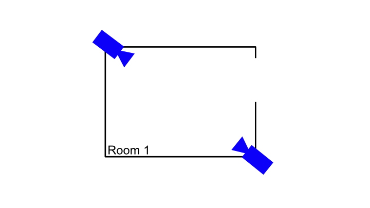
First Design - All cameras in a sequence are looking at the same room
What works: The player has no trouble associating each camera view and constructing a mental map
What doesn't work: Lacking variation Each camera looks at the room from different angles, even though the shape of the rooms could vary, the experience long term feels flat and static.
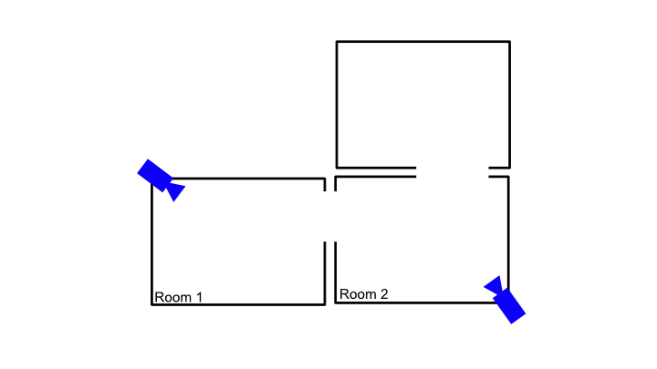
Second Design - There are more than 1 room in each camera sequence
What works: Multiple rooms could be connected/disconnected, it gets more challenging to construct a mental map Opens up design possibility
What doesn't work: Could be very confusing at first The views lacked visual anchors / spatial references, the player gets disoriented If the player switches a camera but don't see the player character with in the new view, they immediately gets confused about the space
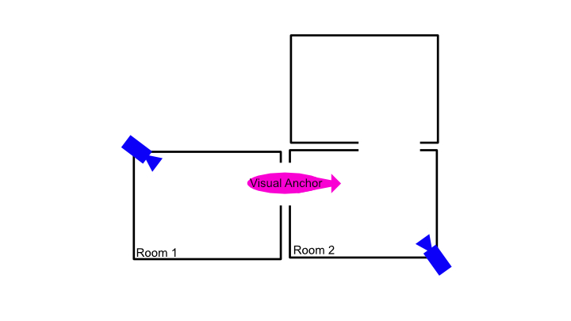
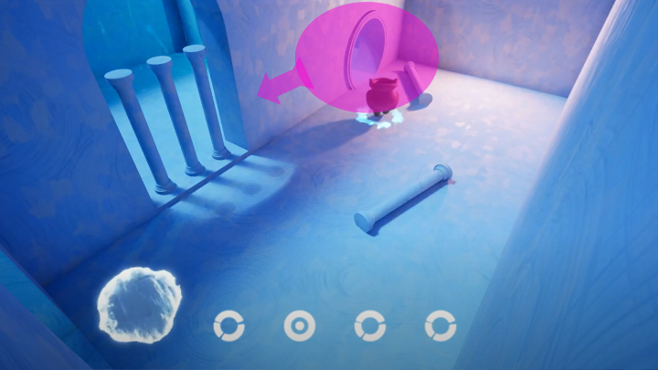
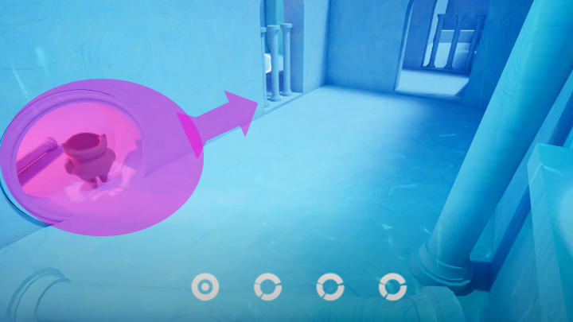
Third Design / Modification - There are more than 1 room in each camera sequence, with some visual anchors
Successfully mitigated spatial confusion, but he lack of variation in visual anchor / spatial references would still confused the player from time to time
The visual anchor is a good design direction, but I need something more unifying, rewarding to help guide the player
A companion water ball that flies from room too room. The flying path is triggered by the player when they get to certain check points
The player is still navigating through sequence of cameras but with the help of this water ball - a unique element that is visible in most of the camera views, the player could construct a mental map more easily while still be challenged and reward
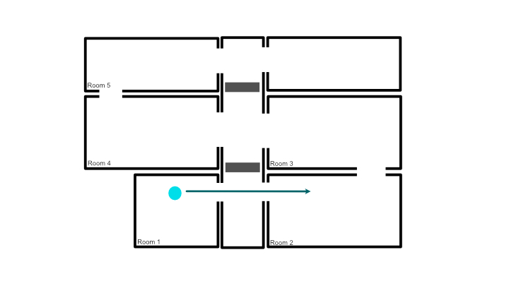
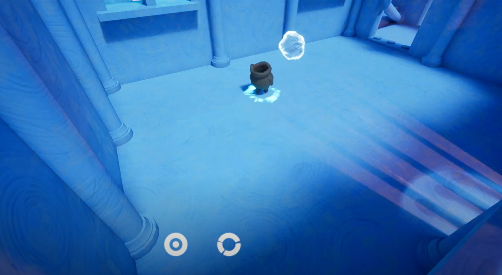
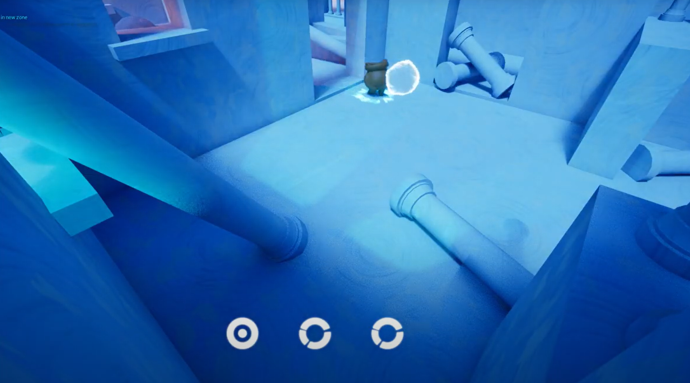
Level 1
The ball travels from Room 1, through the middle corridor, to Room 2 In a straight line The ball lands at the entrance of Room 2 The pathing of the ball is the designed critical path for the player.
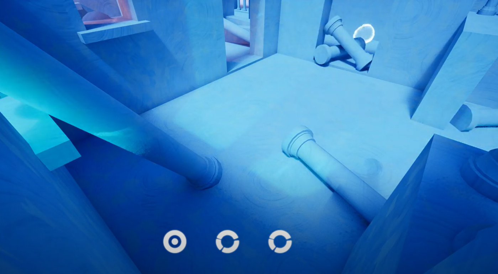
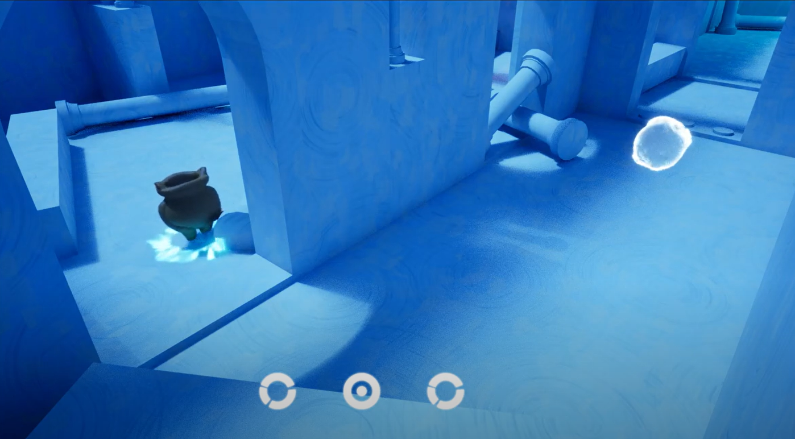
Level 2
The water ball flies over an obstacle. The pathing of the water ball is not the designed critical path. Player must find other way to reach the ball. The game prompts the player with instructions on how to switch between cameras again. Player needs to find an alternative path to get to the water ball.
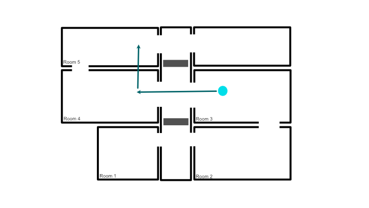
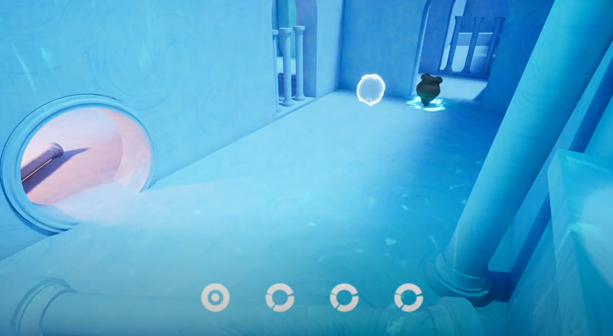
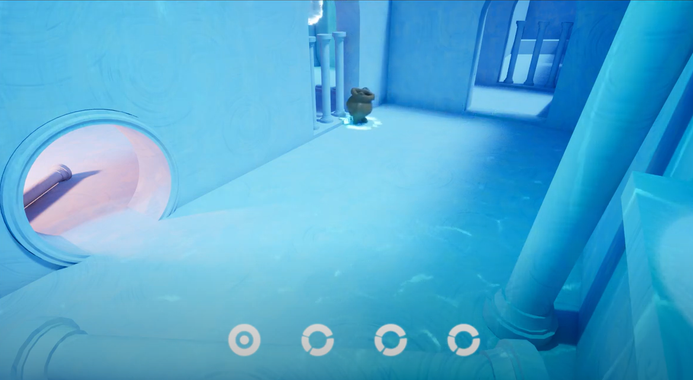
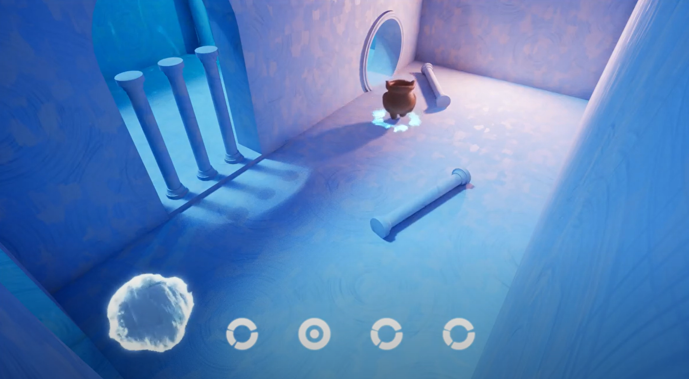
Level 3
The water ball flies over an obstacle. The pathing of the water ball is not the designed critical path. Player must find other way to reach the ball. In addition to the water ball flying over an obstacle, the camera also breaks the 180 rule. There are visual anchors in the level to aid the player to mentally map out the space.